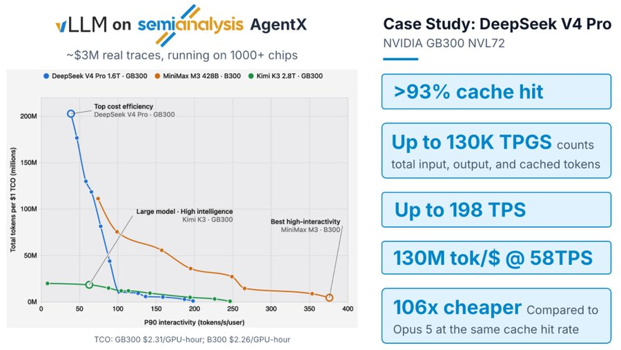
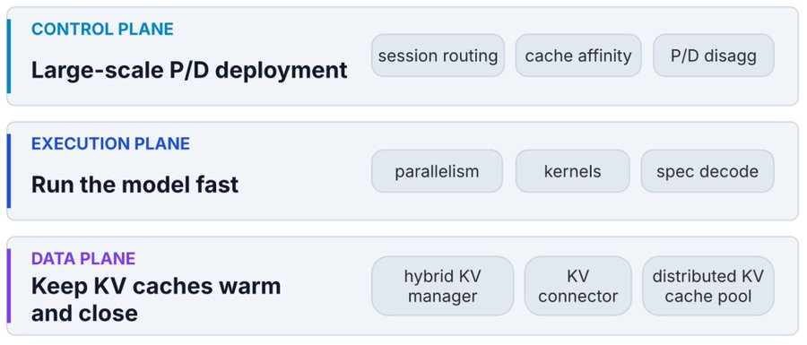
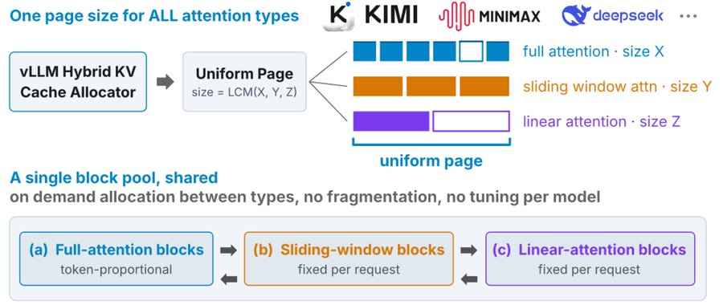
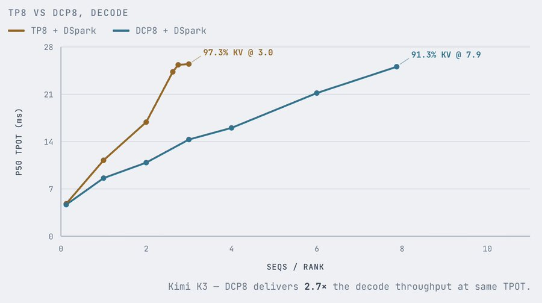
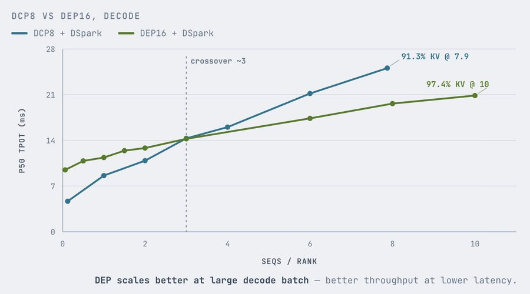
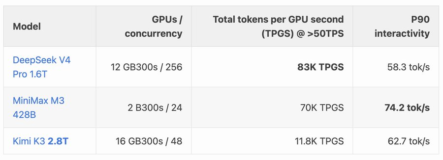
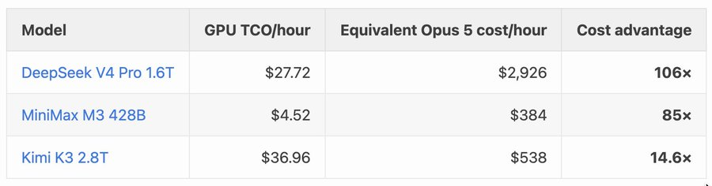

vLLM官方发布长文，讲在真实agentic负载(它们的编码与工具流量)上如何让serving又便宜又低延迟，并给出可公开复现的数字。以下为全文中文直译导读，覆盖数据面、执行面、P/D拆分、苦涩教训与后续路线，图随正文按序嵌入。
vLLM官方把AgentX(SemiAnalysis的开源agentic基准)作为考卷，讲它怎么为真实agentic服务做整套优化。在DeepSeek V4 Pro上可到每GPU秒130K总token，MiniMax M3上交互度最高约每秒376 token；在DeepSeek V4 Pro、MiniMax M3、Kimi K3三个开放前沿模型上，vLLM相对Opus 5的API定价有14.6x到106x的serving成本优势。

自从五月讲agentic serving起，这类流量占比持续涨；OpenAI报告2026年6月企业客户里Codex已占Codex+ChatGPT输出token的64%。高token消耗从两个轴压服务栈：成本决定固定硬件预算里能同时塞几个agent，延迟决定每个agent一轮推理加工具调用推进多快；优化agentic serving就是整体推这条延迟-成本曲线。
AgentX用真实编码轨迹给出四条画像：多轮长会话、单场中位数43轮；长上下文配短输出，输入中位数142K、输出444；前缀复用极重，prefix-cache命中率高于96%；subagent很常见，44% 会话含至少一个subagent，其中子代理rollout中位数4个。
一是前缀缓存压力。多轮会话每轮都整段重演已聊内容，要同时跑很多场，引擎得在轮次间把KV cache外置；到规模上KV管理、前缀缓存、外置还要跨GPU、跨prefill/decode拆分实例和副本高效协作。二是执行效率。长上下文加要紧的延迟预算，同样时间要处理更多token、每token干更多，并行、kernel、调度、投机解码都得住新请求形状上适配。三是找对P/D比例。各会话各subagent的上下文与缓存命中率差异大，路由要在rank间平衡cache亲和与负载；不同并发下要最大化吞吐的optimal P/D比很难一次摸对。

混合KV缓存管理是地基。从PagedAttention到agentic长上下文，KV cache容量压力更重；现代混合模型把滑动窗口、线性attention与全attention混用，不同缓存块尺寸与生命周期都不一样。vLLM的办法是把一个统一内存页当作基本分配单位、走一个共享块池管理。共享池让它按需动态重分配，而不按attention类型静态分区，因为全attention的KV随长度涨、滑窗和循环态另有自己的生命周期，最优分区随并发、上下文、前缀复用变。
这个抽象继续演进以吸收碎片与迁移开销。例如DeepSeek V4初版KV布局把不同缓存类型分成三个尺寸桶、拆出92个张量，有一些填充浪费、对P/D迁移与外置不友好。新的紧凑布局改为每块一个连续backing allocation（把缓存组与层装在一起）而非92个零散张量，减少描述符与P/D迁移开销；启用FP4 indexer后还可更小分配单位，约省10% KV cache内存。
分级外置 + 分布式池。超出显存容量的前缀缓存、跨引擎保留，vLLM集成MooncakeStore提供分布式KV池（详见他们之前博客），现在被越来越多采用；继续在为agentic负载补容量、效率与保留策略。模型架构平齐方面：外置集成在vLLM是一等公民，完整支持稀疏attention、压缩attention、线性attention等新架构，同时异步调度、P/D拆分、投机解码、并行等其它引擎特性保持正常。分级外置还能用磁盘和额外纯CPU节点扩池：MooncakeStore的standalone模式让外部Mooncake客户端持有CPU池与磁盘层、vLLM worker变成纯请求方，每节点挂一个客户端即用CPU与磁盘扩池。池又和Dynamo、llm-d这类router集成，请求在任意实例都能命中缓存。性能上混合模型要为每种attention单独构造key/查表，CPU开销成倍；他们靠更好的数据结构、异步查表、把工作挪出scheduler关键路径、并行收发来压，细节见PR#46188/45444/45659/47317。
会话感知的前缀缓存保留。对线性或滑窗与全attention混合的模型，前缀复用要保住线性态或滑窗缓存；每token都留快照太贵，于是结合两条互补策略。间隔式保留：每轮结束自动保留prompt端缓存/线性态，之后延续轮与分叉subagent常重放并扩展上一轮上下文，可复用；但共享前缀大多在轮内就结尾，间隔保留未必留到检查点。于是第二条：Marconi式选择保留，当某前缀第二次被见到才留检查点，命中过但没留检查点的，就重算缺失态并在此边界存一次，后续共享前缀便能复用。两者结合在高命中率与可承受存储之间取平衡（技术细节见Kimi K3那篇）。

模型专属并行。现代推理有TP/DP/EP/PP/CP多条并行轴，选哪样取决于模型结构、硬件拓扑、负载形态与延迟SLO。下面看GB/B系两张代表卡上两个模型。
Kimi K3。它有MLA与Kimi delta attention(KDA)。MLA把KV压进单head的单潜空间，朴素TP会在各rank复制这份latent缓存，并不划算。改成decode context parallelism(DCP，沿序列维切缓存、每rank留1/N KV) 对agentic有两个好处：decode延迟更低，MLA attention内存受限、成本随上下文涨，前缀越长attention占每步比例越大；吞吐与KV容量更高，避开KV复制就能让更多序列在途而不被admission卡住。代价是多一份通信：每层MLA decode在attention前要query gather、结束后做partial-output reduce。
DCP计算路径被仔细优化以绕开NCCL：用对称内存缓冲让对端GPU直接load/store；query直接多播进attention kernel消费的缓冲；每张GPU把partial attention输出与log-sum-exp统计直接写进对端接收槽，各rank用online softmax本地合并；还把这些GPU间直写与计算融进同一kernel(s)，比默认DCP8每层省约13% 延迟。更大的scale-up域会改最优策略：NVL72级系统上宽EP+DP(DEP) 常比DCP更会扩展、同一decode SLO下吞吐更高，因为更大的多节点DCP里分片attention的通信会盖过它省的算力；DEP把请求及其KV分到不同DP rank、同时把MoE专家分到各rank，避开DCP的attention集合通信。

DeepSeek V4。它也有MLA式KV、在TP下复制导致内存低效；外加它特有的压缩稀疏attention让TP的head分片低效三处：compressor路径每个压缩位置只产一份共享KV而非每head独立态，TP无法沿KV-head维切算力、每个rank重复做compressor；indexer虽有64 head却每token只产一次全局top-k选择，现TP路径在每个rank复制整份indexer，避开top-k前稠密score reduce却重复了活；稀疏MLA主要受累于扫与收集top-k KV条目而非attention算术，TP在每个rank重做这段内存受限的活、只分了便宜的head向计算。实测prefill context parallelism(PCP) 对长prefill最好，data+expert(DEP) 在更广服务条件下好。PCP把prompt序列(query张量)分片、把compressor与indexer工作摊到各rank，给稀疏MLA更宽的局部head形状；32K prompt下PCP8相对TP8有2.65x prefill加速，显著降TTFT，但它decode侧态仍跨rank复制，最适合专职prefill worker。DCP因V4结构更复杂而不如对Kimi K3有效。DEP把请求与decode token分到DP rank、attention全局部，成为多数V4配置的默认。
agentic服务混合了频繁的append-only请求（长前缀复用+短prefill）与偶尔几万token的新鲜长prefill，产生两个调度问题：实例内一个长prefill会挡短交互轮；DEP各rank上prefill排布不均造成负载失衡。vLLM用两个互补控制来解。
打破队头阻塞。默认chunked-prefill按FIFO，一个长prefill会一步步占满整段预算、同rank排队的短轮完全排不进去。对策是 --long-prefill-token-threshold限制单请求每步最多调度的token数；设成512时，长prefill能让出空间让短轮进同batch更早开始decode。DeepSeek V4 Pro在B300上因此每GPU秒token(TPGS) 最多提升约93%、p90交互度约改善2.3x；代价是长请求自身TTFT变高，TTFT敏感部署应调高阈值。
对齐DEP prefill节奏。DEP的MoE all-to-all让各rank必须同一步调前进，一个在腾prefill的rank拖慢整组；不同rank在不同步收到prefill时这惩罚会反复暴露。对策是 --prefill-schedule-interval：只每隔N个引擎步放行一次prefill工作，用跨DP rank对齐的计数器，把prefill集中到各rank同一批步、让中间步整段做decode。
用对P/D拆分配置来扩。单引擎调到最好并不等于分布式部署的延迟-成本最优点，加GPU或者做disagg也不会自己改善曲线：prefill与decode得速率匹配。他们用可被agentic工作流自动化的两阶段标准法：第一阶段饱和画像，把prefill-only与decode-only各自单独打点，扫并行策略(TP对宽EP)与规模(8/16/32 GPU)并把并发抬到吞吐饱和，产出每配置的饱和表(最大prefill/decode req/s)；第二阶段P:D扫描，从第一阶段饱和点推出P/D比，再在合体disagg部署上扫并发、在运作区间内取指标。
agentic负载把kernel瓶颈推向长上下文attention、投机解码与通信。MiniMax M3：CuteDSL长上下文indexer据报告在GB300上按形状把indexer延迟降约3%-31%；上游化的MSA top-k路径把最坏情形kernel性能最多提升约4x、AgentX端到端吞吐大约7%；投机验证路径在中batch decode性能报告中约提升20%。Kimi K3：GEMM与reduce-scatter融合改善sequence-parallel通信，latent-tail MoE融合端到端延迟约降5%。DeepSeek V4：社区贡献改善MXFP4 MoE与HCA压缩(#43584/#44230)、加多流C4A、改进cluster-based top-k。所有kernel全开源，一些已被其它开源引擎采用。

vLLM用从300万美元真实agentic编码轨迹(1M上下文)构建的公开基准、跑在1000+ 芯片约2MW上，展示它是agentic-first。对三个开放前沿模型取的是p90交互度守住每秒每用户50 token高延迟SLO下的最高吞吐配置。DeepSeek V4 Pro：12芯片GB300 PD部署服务256个并发agent会话、p90下每人每秒58.3 token，此工作点每GPU秒约83K总token。MiniMax M3：仅2张B300，p90每秒每人74.2 token、给到70K总TPGS。Kimi K3：2.8万亿参数的巨型前沿模型，常规单机装不下；16张GB300在p90下每秒每人62.7 token、处理11.8K总TPGS。
成本同样关键。理论前缀命中率高于96% 其实是agentic流量给vLLM的成本来源：DeepSeek V4 Pro用GB300基建TCO每小时约28美元跑完该工作负载；同样token量即便按每次理论上可复用的缓存读价都打折，Opus 5也要约2926美元。MiniMax M3在B300上是85x优势，Kimi K3在GB300上即便模型大得多仍便宜14.6x。数字报告到今天，但dashboard在线可交互，AgentX harness在SemiAnalysisAI/agentx-harness，每条结果链到InferenceX可复现。
第一，Pipeline parallelism(含chunked CPP) 不适合“暖”的agentic轮次。PP在又长又冷的新鲜prompt上好，大prefill能填满流水各级、吞吐几乎线性、通信少；但多数agentic轮已有system prompt与之前轮次被缓存，每新请求可能只加几百几千token，鲜算的量填不满流水，bubble吃光潜力。结论不是PP没效，而它是冷的大prefill有用，不该是占主导的暖且前缀重的轮次的默认。
第二，DCP不能干净迁移到DeepSeek V4。对纯MLA(如R1、K2.5/K2.7)与混合MLA(K3)都好用，V4却因更复杂的attention栈而难兑现：压缩稀疏与高压缩attention有indexer、额外compressor与主attention，context parallelism得切分并协调所有这些子层，引入可观通信与实现复杂度。即便大把做通信-计算重叠并优化kernel，DCP也只是追平DEP而非超越。结论强化执行面观点：并行必须跟随模型架构，一个latent-attention模型成立的策略未必迁移到另一个。

第三，负载均衡不保证更好性能。DEP聚合部署里KV使用明显失衡，自然反应是按队列深度、进行中token或当前KV占用去均衡请求；但AgentX上这些策略全部跑输简单的session-aware sticky路由。原因是cache局部性：很多agentic会话轮间延迟短，下一轮常在前序前缀仍驻原GPU时就到，把它挪到负载更低的rank虽前缀在分布式池里保留着，却要系统取回KV；迁移本身异步并与计算重叠，仍不是免费的，预取的块临时占GPU KV容量、降低目标rank可接纳序列数。于是队列更平了，同时处理中的并发反而更少。对轮间延迟短的工作负载，留住session局部性比瞬时均衡更有价值：路由决策要看每worker上已驻留的状态，而不只看排队的工作量。
方向是让agentic结构在整个serving栈显式化。控制面：对第一轮请求(常需长的新鲜prefill去把前缀缓存填起来)与2+ 轮请求(高缓存复用、短append prefill)分开更显式的路由，避免队头阻塞，并允许两端各自配引擎设置与并行(如PCP与CPP)。执行面/数据面与社区合作支持：agent hints：让agentic框架或harness随请求带上会话结构、潜在分支点与缓存位置、工具调用延迟、会话生命周期等，第一步用标准化API消费，再用来指导调度、缓存淘汰等；可编程KV cache：不同负载要不同放置/保留/复制/淘汰策略，编程接口让用户按负载形态控制预取、淘汰、软pin；基于会话的KV管理：轮间间隙是移动保留态的好时机，空闲期预取可藏住迁移延迟、减少冷启动恢复。
这项工作由inferact主导、获vLLM社区大力支持；感谢SemiAnalysis开发并运维开放AgentX基准、使其方法可复现。

参考：https://x.com/vllm_project/status/2097427730983776758